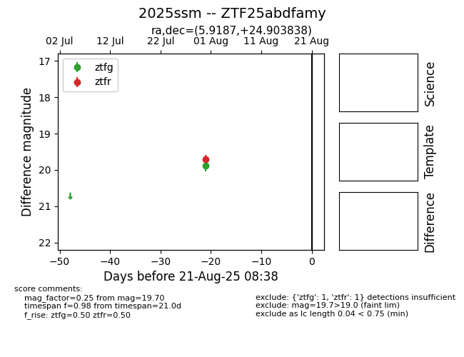

Target 2025ssm at 2025-08-21 09:16, see:
FINK: fink-portal.org/ZTF25abdfamy
Lasair: lasair-ztf.lsst.ac.uk/objects/ZTF25abdfamy
ALeRCE: alerce.online/object/ZTF25abdfamy
TNS: wis-tns.org/object/2025ssm
YSE: ziggy.ucolick.org/yse/transient_detail/2025ssm
alt names
ZTF25abdfamy (ztf,alerce)
2025ssm (tns,yse)
coordinates:
equatorial (ra, dec) = (5.9187,+24.90384)
galactic (l, b) = (114.9866,-37.53922)
photometry
last ztfg=19.89, ztfr=19.70
1 ztfg, 1 ztfr detections
